Lights
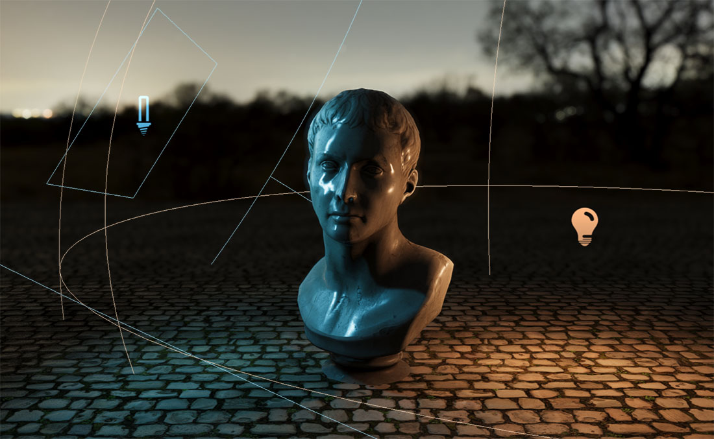
Lights illuminate the objects of a scene and make them cast shadows. Evergine uses physically based shading, so the same light model works for everything from a desk lamp to the sun, and a scene can contain many lights of different kinds at once.
Each light is a component on an entity. The entity's Transform3D gives the light its position and, for lights that have one, its direction: lights shine along the transform's forward vector.
Create a light in Evergine Studio
In the Entities Hierarchy panel of the scene editor, click Add Entity, open Lights 3D and choose the kind of light:
- Point Light
- Directional Light
- Spot Light
- Sphere Light
- Disk Light
- Rectangle Light
- Tube Light
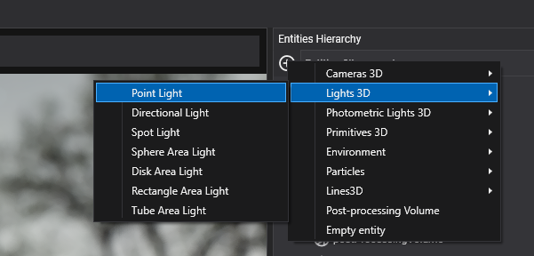
Photometric Lights 3D has the same seven kinds, configured in physical units:
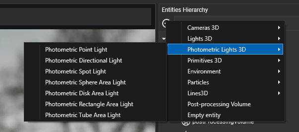
The Environment menu also has a Sun Light, a directional light that drives the sky; see Environment.
Create a light from code
using Evergine.Common.Graphics;
using Evergine.Framework;
using Evergine.Framework.Graphics;
using Evergine.Mathematics;
public class MyScene : Scene
{
protected override void CreateScene()
{
Entity lamp = new Entity("lamp")
.AddComponent(new Transform3D() { Position = new Vector3(0, 3, 0) })
.AddComponent(new PointLight()
{
Color = Color.Orange,
Intensity = 3,
LightRange = 10,
IsShadowEnabled = true,
});
// Directional lights ignore position; only the orientation of the transform matters.
Entity sun = new Entity("sun")
.AddComponent(new Transform3D() { LocalRotation = new Vector3(-MathHelper.PiOver4, MathHelper.PiOver4, 0) })
.AddComponent(new DirectionalLight()
{
Intensity = 2,
IsShadowEnabled = true,
});
this.Managers.EntityManager.Add(lamp);
this.Managers.EntityManager.Add(sun);
}
}
Common properties
Every light has these properties:
| Property | Default | Description |
|---|---|---|
| IsEnabled | true | Turns the light on or off. |
| Color | White | Color of the light. Photometric lights can derive it from a temperature instead. |
| Intensity | 1 | Brightness in an arbitrary unit. Photometric lights hide it and expose a physical unit instead. |
| IsShadowEnabled | false | Whether the light casts shadows. Shown as Shadow enabled in Evergine Studio. |
| ShadowDepthBias | 0.5 | Moves the shaded point towards the light before it is compared against the shadow map, in shadow map texels. Shown as Depth Bias in Evergine Studio. See Shadow bias. |
| ShadowNormalBias | 1 | Moves the shaded point along its surface normal, in shadow map texels. Shown as Normal Bias in Evergine Studio. See Shadow bias. |
| ShadowOpacity | 1 | How dark the shadow is, from 0 (invisible) to 1 (fully dark). |
Note
Before Evergine 2026.11.12, lights had a single ShadowBias depth offset. ShadowBias is now obsolete and ignored: setting it compiles with a warning and has no effect. Use ShadowDepthBias and ShadowNormalBias instead, starting from their defaults, because the units are different. See the 2026.11.12 upgrade guide.
Photometric and non-photometric lights
Non-photometric lights use Color and Intensity: simple and easy to tune by eye. Photometric lights are the same lights configured in physical units, so an 800 lm bulb or a 100,000 lux sun look right next to each other and next to a camera with physical exposure.
Each photometric light class derives from its non-photometric counterpart (PhotometricPointLight from PointLight, and so on) and adds:
| Property | Default | Description |
|---|---|---|
| ColorByTemperature | true | Derive the color from Temperature instead of Color. |
| Temperature | 6500 | Color temperature in kelvin. 6500 K is daylight white; lower values are warmer, higher values bluer. |
The intensity is set in the unit that suits each kind of light:
| Light | Property | Unit |
|---|---|---|
PhotometricDirectionalLight |
Illuminance | lux, the light arriving per square meter of surface |
PhotometricPointLight, PhotometricSpotLight and the four photometric area lights |
LuminousPower | lumens, the total light the source emits |
PhotometricSpotLight also has IsFocusedSpot. When it is on, the luminous power is concentrated in the cone, so narrowing the cone makes the light brighter, like a real focused spot. When it is off (the default), the intensity is the same as that of a point light with the same power.
Types of lights
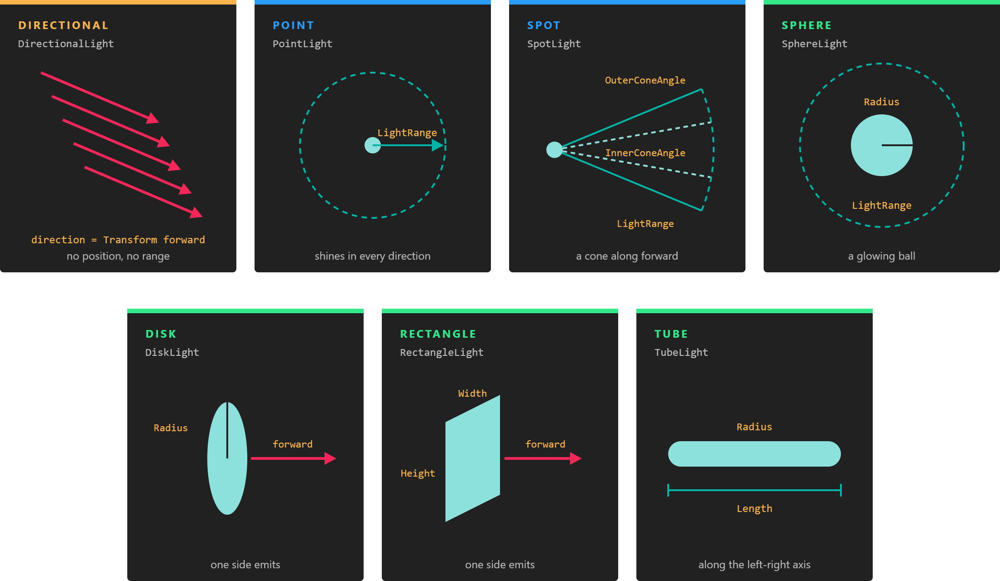
Directional lights have only a direction. Every other light has a position and a range; spot lights add a cone, and area lights add a shape that emits.
Lights fall into three groups:
- Directional lights have a direction but no position, and reach every object.
- Punctual lights (point and spot) emit from a single point and fade out at
LightRange. - Area lights (sphere, disk, rectangle and tube) emit from a surface. They give softer highlights and more realistic reflections, at a higher shading cost.
Directional light
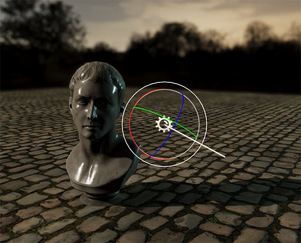
A directional light comes from infinitely far away along one direction, like sunlight. It lights every object in the scene the same way, whatever its position.
Its shadow properties are:
| Property | Default | Description |
|---|---|---|
| ShadowDistance | 80 | How far from the camera, in meters, directional shadows are drawn. |
| ShadowCascadeCount | 4 | Number of shadow cascades, from 1 to 4. |
| CascadeSplitMode | Automatic |
How the distance is divided between the cascades: Automatic uses GammaDistribution, Manual uses ManualCascadeSplits. |
| GammaDistribution | 0.8 | With automatic splits, how the cascades are spread over the shadow distance, from 0 (evenly) to 1 (logarithmically, with more detail near the camera). |
| ManualCascadeSplits | (0.067, 0.2, 0.467) | With manual splits, where the first, second and third cascades end, as fractions (0 to 1) of the shadow distance. |
| CascadeFitMode | Stable |
How each cascade is fitted to its part of the view: Stable or Tight. |
| CascadeSelectionMode | Depth |
How each pixel picks its cascade: Depth or Map. |
| CascadeBlendFraction | 0.1 | Fraction of each cascade, from 0 to 0.5, that is blended with the next one to hide the seam between them. 0 turns blending off. |
| ShadowFadeFraction | 0.1 | Fraction of the shadow distance, from 0 to 1, over which shadows fade out before they end. 0 makes them end in a hard line. |
| FarCascadesUpdateInterval | 1 | How often, in frames, the far cascades are rendered, from 1 (every frame) to 8. |
| DebugMode | false | Tints each shadow cascade with its own color and draws its shadow map texels as a grid, to tune the properties above. |
Evergine Studio shows most of them with shorter names, such as Cascade Count, Cascade Splits, Cascade Blend or Shadow Fade.
Shadow cascades
Directional shadows use cascaded shadow maps: the part of the camera's view within ShadowDistance is cut into ShadowCascadeCount slices (four by default), and each slice gets its own shadow map. Slices close to the camera cover little space and give sharp shadows; distant slices cover more and are coarser.
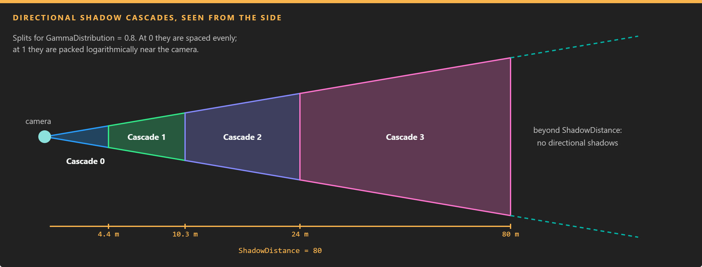
The first cascade covers the few meters in front of the camera at full resolution. Lowering ShadowDistance makes every cascade smaller and every shadow sharper.
Splits. With CascadeSplitMode set to Automatic, GammaDistribution decides where each cascade ends. With Manual, ManualCascadeSplits sets it directly: X is the end of the first cascade, Y of the second and Z of the third, as fractions of the shadow distance. Only the first ShadowCascadeCount - 1 values are used, because the last cascade always ends at ShadowDistance. The default manual splits end the cascades at about 5, 16, 37 and 80 meters.
Fit. CascadeFitMode decides how each shadow map is placed over its slice:
Stable(the default) fits each cascade to a sphere around its slice. The size of a shadow map texel never changes while the camera moves or rotates, so shadow edges stay still instead of shimmering. Part of each shadow map is left unused.Tightfits each cascade to the box that encloses its slice, as seen from the light. It uses the shadow map better and gives sharper shadows, but shadow edges shimmer when the camera rotates.
Selection. CascadeSelectionMode decides which cascade shades each pixel:
Depth(the default) picks the cascade by the distance from the camera to the pixel.Mappicks the first cascade whose shadow map contains the pixel. More pixels get the sharpest cascade, at the cost of testing the pixel against several cascades.
Blending and fade-out. The last CascadeBlendFraction of each cascade is blended with the next cascade, so there is no visible line where the shadow resolution changes. Pixels in that band read two shadow maps. In the same way, shadows fade out over the last ShadowFadeFraction of the shadow distance instead of ending abruptly at ShadowDistance.
Far cascade updates. When FarCascadesUpdateInterval is greater than 1, the far half of the cascades (the last two of four) is rendered only once every that many frames, and the far cascades take turns, which reduces the cost of the shadow pass. A cached cascade is rendered again as soon as the camera moves too far from where it was rendered, so static shadows stay correct, but the shadows of moving objects in the distance update less often. It has no effect when several cameras render the same light.
using Evergine.Framework.Graphics;
using Evergine.Mathematics;
var sun = new DirectionalLight()
{
IsShadowEnabled = true,
ShadowDistance = 40,
ShadowCascadeCount = 3,
CascadeSplitMode = DirectionalLight.CascadeSplitModes.Manual,
ManualCascadeSplits = new Vector3(0.1f, 0.35f, 0), // Z is ignored with three cascades.
FarCascadesUpdateInterval = 2,
};
Point light
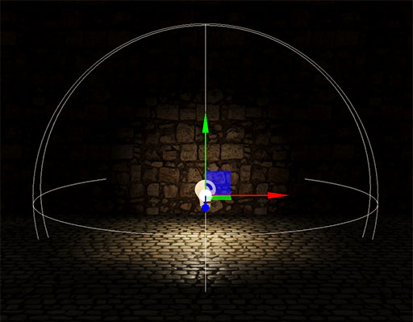
A point light shines equally in all directions from its position and fades to zero at its range. Use it for bulbs, candles and other small local sources.
| Property | Default | Description |
|---|---|---|
| LightRange | 20 | Distance in meters at which the light reaches zero. Keep it as small as the scene allows: objects outside the range skip this light entirely. |
| ShadowNearPlane | 0.1 | Near plane of the shadow map cameras. |
| DebugMode | false | Tints the six faces of the shadow cube map and draws their texels as a grid. |
A point light renders its shadows into a cube map: six shadow maps, one per face.
Spot light
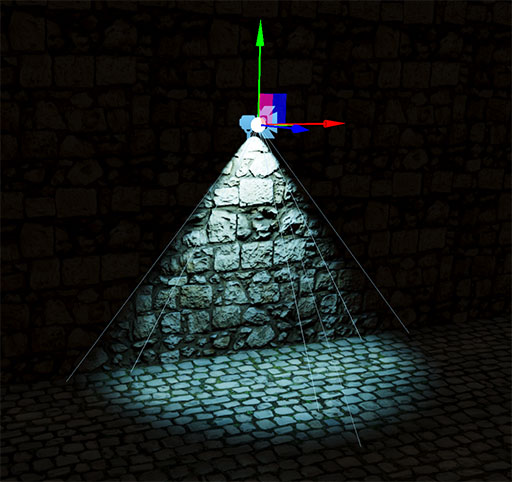
A spot light shines from its position in a cone around its forward direction, like a flashlight or a stage light.
| Property | Default | Description |
|---|---|---|
| LightRange | 20 | Distance in meters at which the light reaches zero. |
| OuterConeAngle | π/4 (45°) | Full angle of the cone, in radians. Nothing outside it is lit. |
| InnerConeAngle | 0 | Full angle, in radians, of the inner cone at full intensity. Between the inner and outer cones the light fades. Equal angles give a hard edge. |
| ShadowNearPlane | 0.1 | Near plane of the shadow map camera. |
| DebugMode | false | Draws the shadow map texels as a colored grid on the lit surfaces, to check the shadow resolution. |
Area lights
Area lights emit from a shape instead of a point. They are all cube-map lights with LightRange (default 20), ShadowNearPlane and DebugMode, plus the dimensions of their shape:
| Light | Shape | Properties (defaults) | Typical use |
|---|---|---|---|
| Sphere light | 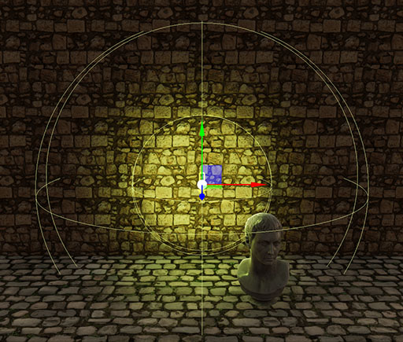 |
Radius (2) |
Large round lamps and glowing orbs. |
| Disk light | 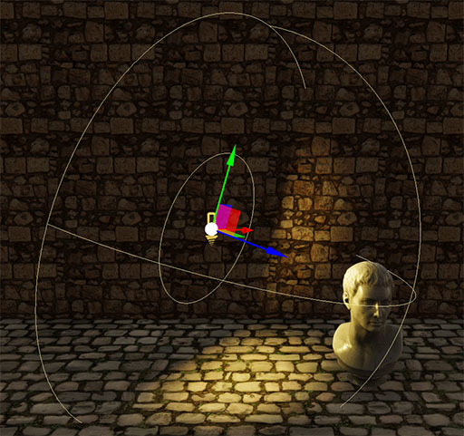 |
Radius (2) |
Ceiling lights and soft spots. It emits from one side, along its forward direction. |
| Rectangle light | 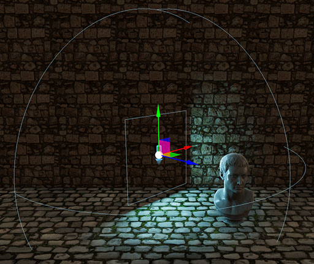 |
Width (3), Height (3) |
Windows, screens and softboxes. It emits from one side, along its forward direction. |
| Tube light | 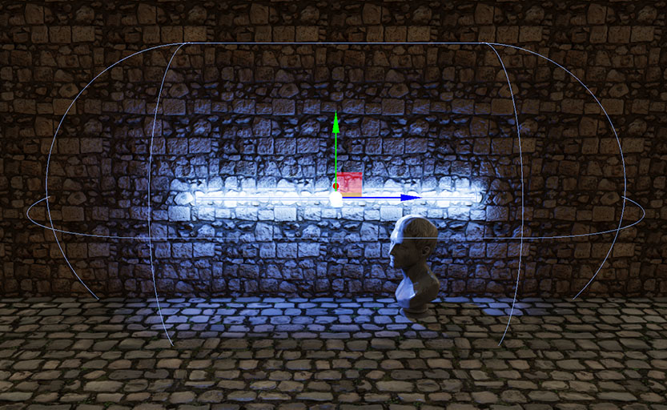 |
Length (6), Radius (0.2) |
Fluorescent tubes and neon. The tube lies along the entity's left-right axis. |
Note
Area lights evaluate their shape for every shaded pixel, so they cost noticeably more than point and spot lights. Use them where the soft, shaped highlights are visible.
How many lights
The forward render path assigns each object only the lights whose range touches its bounding box. A camera handles up to 64 visible lights at a time, and only materials with lighting enabled receive them. Materials created with lighting disabled are not affected by lights at all.
Shadows
To make a light cast shadows, turn on IsShadowEnabled. Every shadow-casting light renders the scene again from its own point of view each frame (once per cascade for a directional light, six times for point and area lights), so enable shadows only on the lights that need them.
Objects cast shadows through the RenderFlags.CastShadows flag of their drawable, which is on by default.
Shadow bias
A shadow map stores depth at a limited resolution, so a surface compared against its own shadow map can shadow itself in stripes ("shadow acne"). To avoid it, Evergine moves the point being shaded before the comparison:
ShadowDepthBiasmoves it towards the light.ShadowNormalBiasmoves it along the surface normal. The offset grows with the slope of the surface relative to the light and with the size of theShadowFilterkernel, and is zero on surfaces that face the light head-on.
Both are measured in shadow map texels: in each cascade for directional lights, and at the distance of the shaded point for spot, point and area lights. The same values therefore work in every cascade, and you do not need to retune them after changing the shadow resolution, the ShadowDistance or the number of cascades.
The defaults suit most scenes. If surfaces still shadow themselves in stripes, raise ShadowNormalBias (or ShadowDepthBias for surfaces that face the light). If shadows detach from their casters ("peter panning") or light leaks where objects touch the ground, lower them, starting with ShadowDepthBias.
ShadowMapManager
The quality of every shadow in a scene is set on the ShadowMapManager scene manager, which the default scene template already includes. Select it in the Scene Managers list of the scene to change it.

| Property | Default | Description |
|---|---|---|
| DirectionalResolution | Size_2048 |
Size of each directional cascade shadow map: Size_256 to Size_4096. |
| SpotResolution | Size_512 |
Size of each spot light shadow map. |
| PunctualResolution | Size_512 |
Size of each cube face for point and area lights. |
| ShadowFilter | PCF3x3 |
Percentage-closer filtering kernel that softens shadow edges: PCF2x2, PCF3x3, PCF5x5 or PCF7x7. Larger kernels are softer and more expensive. In low profile mode it is always PCF3x3. |
| AutoDepthBounds | false | Measures on the GPU how deep the visible scene really is and fits the directional cascades to that range, never beyond ShadowDistance. It gives sharper shadows when the camera looks at nearby geometry, at the cost of a small compute pass per camera. |
using Evergine.Framework;
using Evergine.Framework.Graphics;
using Evergine.Framework.Managers;
public class MyScene : Scene
{
protected override void CreateScene()
{
var shadowMapManager = this.Managers.FindManager<ShadowMapManager>();
if (shadowMapManager != null)
{
shadowMapManager.DirectionalResolution = ShadowMapProvider.ShadowMapSize.Size_4096;
shadowMapManager.ShadowFilter = ShadowMapProvider.Filter.PCF5x5;
}
}
}
Tip
If directional shadows look blocky, lower ShadowDistance on the light before raising DirectionalResolution. Halving the distance sharpens shadows about as much as doubling the resolution, and costs nothing.